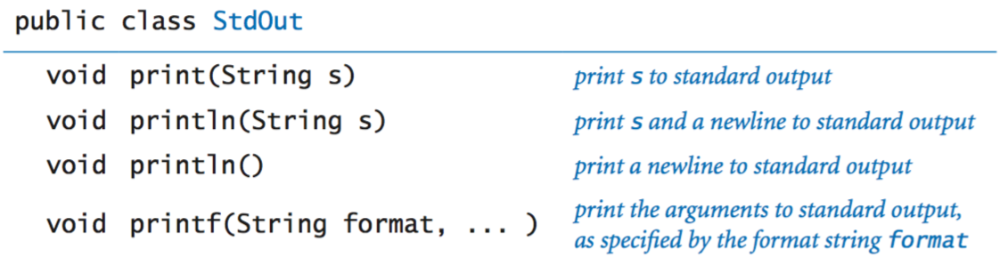

Hello, World

Hello, World
Editing, compiling, and executing.

Built-in data types.
Declaration and assignment statements

Integers
Floating-point numbers
Booleans
Comparison Operators
Printing
Parsing command-lin arguments
Math library
Full java.lang.Math APIJava library calls
Type Conversion
Anatomy of an if statement
If and if-else statements
Nested if-else statement
Anatomy of a while loop
Anatomy of a for loop

Loops
Break statement
Do-while loop
Switch Statement
Arrays
Two-dimensional arrays
Our standard output library
Formatted Printing
Our standard input library
Full Stdin APIStandard drawing library
Full StdDraw APIStandard Audio Library
Command line
Redirection and Piping
Functions

Libraries of functions


Standard Random Library
Full Random APIStandard Statistics library
Full Stat APIUsing an object
Instance Variables
Constructors
Instance Methods
Classes
Object-oriented libraries


Java's String Data Type
Full java.lang.string APIJava's Color Data Type
Full java.awt.Color APIJava Input Library
Full in APIJava Output Library
Java's picture library
Full Picture APIJava's Statck Data Type
Full Stack APIJava's Queue Data Type
Full Queue APIIterable
Java's symbol table data type
Full ST APIJava's set data type
Full SET APIJava's graph data type
Full Graph APICompile-time and run-time errors. Here's a list of errors compiled by Mordechai Ben-Ari. It includes a list of common error message and typical mistakes that give rise to them.
Here's a list